Learning Robotic Grasping
Imitation Learning, Residual RL, Action Chunking, and Adaptive Replanning
Abstract
How can a robot learn reliable grasps and decide when to replan as observations change? In MuJoCo Franka Panda studies, wider expert demonstrations improved single-step behavior cloning (BC) success from 12.2% to 89.7% on a ±20 cm test range. Four-step action-chunked BC (H4) achieved 94.37% mean success versus 83.42% for one-step BC (H1) across three training seeds. Residual SAC sometimes rescued failed grasps but also introduced seed-dependent regressions. With three H4 policies frozen, I investigated replanning frequency and synthetic observation noise. A one-shot uncertainty-based controller improved over fixed four-step execution under stationary noise. I then independently validated a Kalman noise estimator and tested periodic online replanning when noise switched between 0 and 10 mm. Across 24,000 audited episodes, Kalman Online achieved 92.07% grasp success versus 90.58% for Kalman OneShot (+1.48 percentage points; 95% paired bootstrap CI +0.92 to +2.08), with positive effects for all three fixed policies. These results concern simulated state observations, not camera perception or real robots.
Simulation-only grasping · State-based MLP BC (not ACT or Diffusion Policy) · Paired evaluations · Three frozen H4 policies in the latest study · Synthetic observation noise, not camera occlusion · No real-robot claim
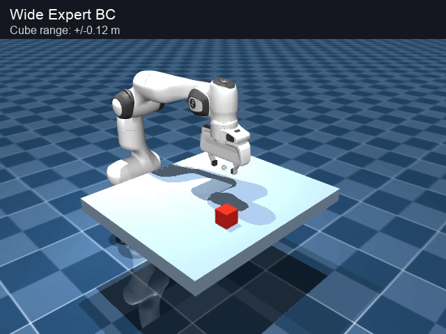
01 / Imitation Learning
First, does training-data coverage matter?
I began with 200 expert demonstrations at ±2 cm. I compared adding 100 episodes from either the expert controller or single-round DAgger (states visited by the learned policy, labeled with expert actions). Additional data came from a Narrow (±2 cm) or Wide (±12 cm) position range. The four conditions used the same model architecture and matched additional sample counts.

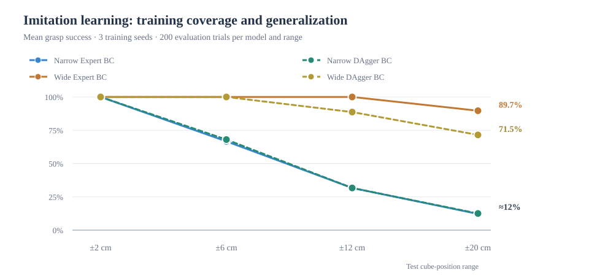
Finding 1: Wider expert demonstrations improved generalization dramatically. At ±20 cm, Wide Expert BC achieved 89.7% success, versus 12.2% for Narrow Expert BC. In this setup, one DAgger round did not outperform adding expert data.
02 / Residual Reinforcement Learning
Can SAC improve a strong BC policy?
I froze the Wide Expert BC model (training seed 42) and trained SAC to add small XYZ corrections (up to ±5 mm per axis). BC still controlled the gripper. Each SAC run used 30,000 interaction steps; three SAC training seeds were tested per condition.
On 500 matched evaluation positions, C had the highest mean success (92.3%), compared with 91.2% for BC, but performance varied across SAC training seeds. I selected C for a new held-out test.
See A/B/C comparison and training-seed variability (500 trials)
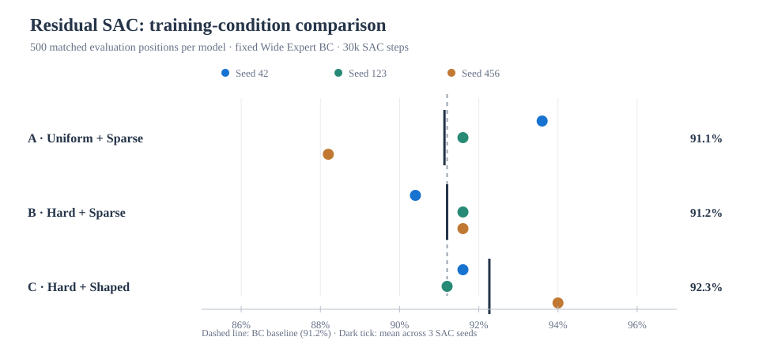
Hard sampling uses 90% outer-region and 10% inner-region positions, rather than selecting observed failures. All best checkpoints were selected on 40 separate validation seeds; the 500-position comparison informed the choice of C for further evaluation.
03 / SAC Checkpoint Comparison
A promising improvement, but not across every seed
I compared the three trained C policies on 1,000 matched cube positions, without retraining or changing checkpoints. The fixed BC baseline succeeded in 939/1,000 trials (93.9%). These positions were separate from SAC training and checkpoint validation, but the comparison subsequently informed my choice of Seed 456 for the gate experiments; it is therefore exploratory evidence for that selection.
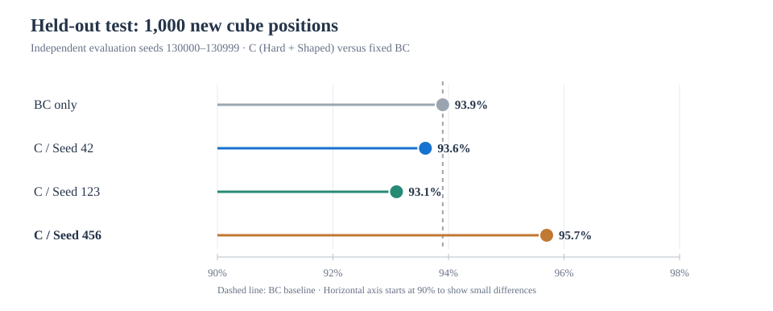
Why did the results differ? Every change in success or failure occurred outside the ±12 cm demonstration range. Seed 456 rescued 22 BC failures but caused 4 regressions; the other SAC seeds caused more regressions than rescues.
Explore out-of-range generalization and rescued/failed grasps (2 charts)
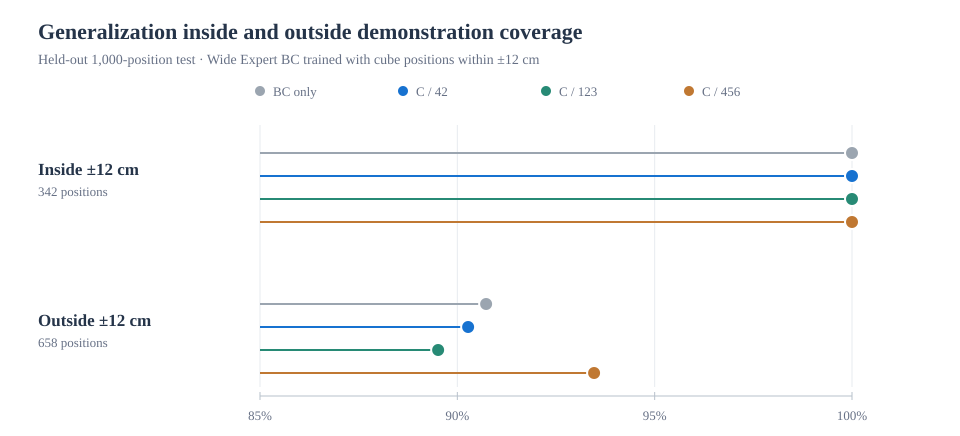
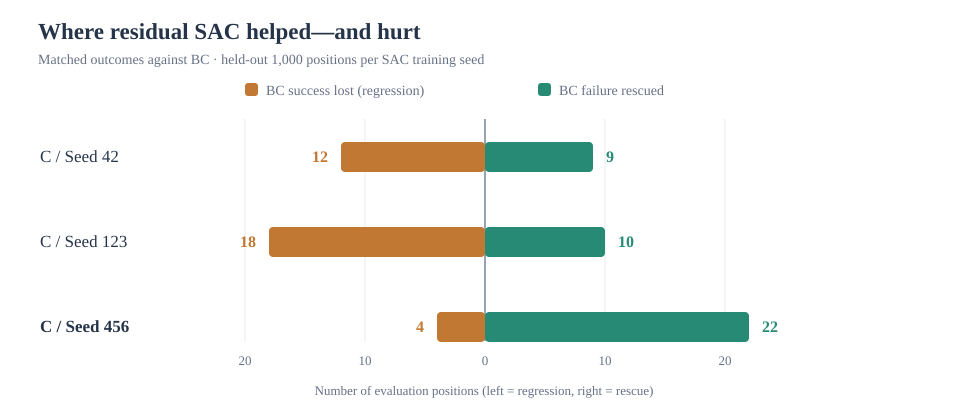
04 / Selective Residual Reinforcement Learning
Can SAC correct failures without disrupting successes?
Always applying SAC can rescue BC failures, but it can also turn successful grasps into failures. I tested a simple episode-level spatial gate: keep BC unchanged inside its ±12 cm demonstration range, and activate SAC only in outer regions where paired calibration trials suggested a net benefit. The BC and SAC model weights remain frozen.
I calibrated both gates using 500 paired trials (seeds 120000–120499), then froze the rules before testing on 2,000 previously unused, matched positions (seeds 150000–151999). All four methods used the same fixed Wide Expert BC model; the SAC controller was Condition C, training seed 456. The fixed gate was calibrated for this specific checkpoint, not for all possible SAC policies.
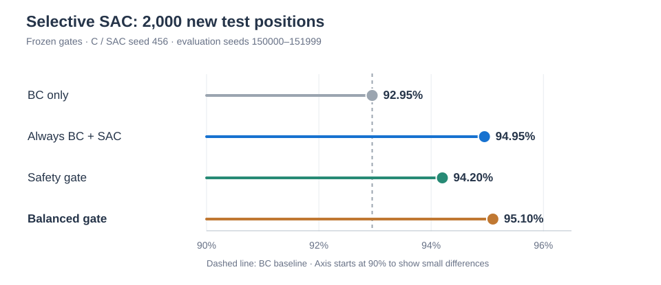
| Controller | Success | Rescue / Regression | SAC used |
|---|---|---|---|
| BC only | 1,859 / 2,000 (92.95%) | N/A | 0% |
| Always SAC | 1,899 / 2,000 (94.95%) | 53 / 13 | 100% |
| Safety Gate | 1,884 / 2,000 (94.20%) | 25 / 0 | 14.8% |
| Balanced Gate | 1,902 / 2,000 (95.10%) | 44 / 1 | 30.7% |
Rescue: BC fails but BC + SAC succeeds. Regression: BC succeeds but BC + SAC fails. The gate makes its choice from the cube's initial position, not by observing whether BC will succeed. Zero observed regressions is not a safety guarantee.
Finding 3 (selected SAC checkpoint): The Safety Gate preserved all 1,859 successful BC grasps in this test and rescued 25 additional failures. The Balanced Gate achieved 95.10% success with 69.3% fewer SAC activations than always-on SAC; its 0.15-point advantage over always-on SAC was not significant (paired exact McNemar, p ≈ 0.664). The next experiment tested whether these results transfer across SAC training seeds.
Where did SAC help or hurt? (regional breakdown)
The SAC effect was strongly position-dependent. In the EN quadrant, SAC rescued all 25 BC failures without regressions; in ES, it introduced more failures than it rescued. The gate uses these spatial patterns, not a learned failure detector.
| Region | Positions | BC successes | SAC successes | Rescue / Regression |
|---|---|---|---|---|
| Inside ±12 cm | 750 | 750 | 750 | 0 / 0 |
| EN (+x, +y) | 296 | 271 | 296 | 25 / 0 |
| WS (−x, −y) | 318 | 281 | 299 | 19 / 1 |
| WN (−x, +y) | 316 | 262 | 266 | 5 / 1 |
| ES (+x, −y) | 320 | 295 | 288 | 4 / 11 |
05 / Cross-Seed Robustness
Does the same spatial gate work with other SAC policies?
To test whether the promising Seed 456 result generalized, I kept the same frozen Safety (EN) and Balanced (EN/WS) gates and evaluated SAC training seeds 42, 123, and 456 on another 2,000 previously unused positions per checkpoint (evaluation seeds 170000–171999). The BC baseline and all cube positions were identical across checkpoints; no gate was recalibrated. This directly tests transfer of a Seed 456-calibrated gate, not the effectiveness of calibrating a new gate for each policy.
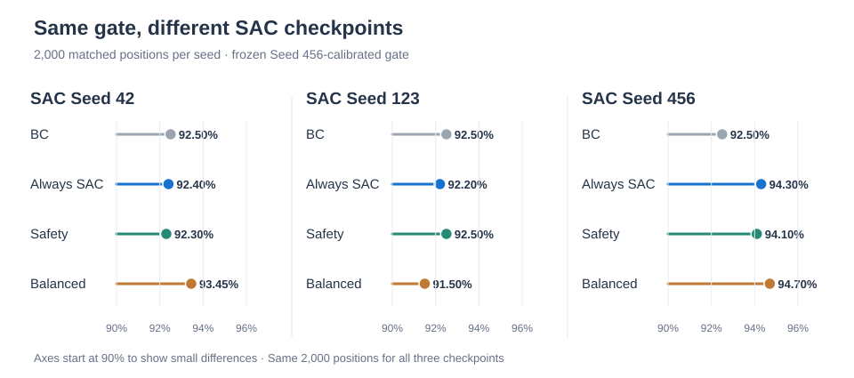
| SAC seed | Controller | Success | Rescue / Regression | SAC used |
|---|---|---|---|---|
| 42 | BC only | 92.50% | N/A | 0% |
| 42 | Always SAC | 92.40% | 28 / 30 | 100% |
| 42 | Safety | 92.30% | 1 / 5 | 16.9% |
| 42 | Balanced | 93.45% | 24 / 5 | 33.6% |
| 123 | BC only | 92.50% | N/A | 0% |
| 123 | Always SAC | 92.20% | 30 / 36 | 100% |
| 123 | Safety | 92.50% | 4 / 4 | 16.9% |
| 123 | Balanced | 91.50% | 11 / 31 | 33.6% |
| 456 | BC only | 92.50% | N/A | 0% |
| 456 | Always SAC | 94.30% | 53 / 17 | 100% |
| 456 | Safety | 94.10% | 32 / 0 | 16.9% |
| 456 | Balanced | 94.70% | 44 / 0 | 33.6% |
Why did transfer fail? The regions where SAC helped depended on the trained checkpoint. In the WS quadrant, SAC Seed 42 rescued 23 grasps with no regressions, while Seed 123 rescued only 7 but caused 27 regressions. In EN, Seed 456 rescued 32 with no regressions, whereas Seed 42 rescued 1 and caused 5 regressions. A region selected using one policy's behavior can be harmful for another.
Finding 4: The fixed Safety Gate did not prevent regressions for all three SAC seeds (5, 4, and 0 regressions). The Balanced Gate improved BC for seeds 42 and 456, but reduced success by 1.00 percentage point for seed 123. Fewer SAC activations did not guarantee better performance. This motivated testing calibration separately for each SAC checkpoint.
Exact paired McNemar tests with Holm adjustment across the three SAC seeds were used for gate comparisons. Balanced differed significantly from BC in all three cases, but Seed 123 was significantly worse, not better. Safety exceeded BC significantly only for Seed 456. These tests are conditional on the selected checkpoints and shared positions; the three 2,000-position evaluations are not 6,000 independent location samples. Three training seeds are insufficient to establish reliable cross-seed generalization.
06 / Policy-Specific Gate Calibration
What if each SAC policy gets its own gate?
Instead of transferring one spatial gate to every SAC model, I calibrated the same pre-defined quadrant rules separately for five newly trained SAC seeds (7, 19, 73, 202, 314). Each model used 500 paired calibration positions, followed by 2,000 new, matched test positions. A gate activates SAC only in regions with enough observed rescues and sufficiently few regressions; otherwise, it uses BC alone.
Four of the five models selected no region and fell back to BC for every trial. Only Seed 314 produced an active policy-specific gate. Its results are shown below:
| Controller (Seed 314) | Success | Rescue / Regression | SAC used |
|---|---|---|---|
| BC Only | 91.70% | N/A | 0% |
| Always SAC | 96.10% | 91 / 3 | 100% |
| Fixed Safety | 92.75% | 21 / 0 | 16.8% |
| Policy-Specific Safety | 94.70% | 60 / 0 | 34.6% |
| Fixed Balanced | 93.95% | 45 / 0 | 32.2% |
| Policy-Specific Balanced | 94.90% | 67 / 3 | 51.4% |
Finding 5: Policy-specific Safety showed zero observed regressions in all five models, but four achieved this by never activating SAC. For Seed 314, it improved BC by 3.00 percentage points while using SAC in 34.6% of trials. Abstaining can protect BC performance, but it is not the same as learning an effective correction.
These are deterministic simulation results on 2,000 shared initial positions per model (evaluation seeds 190000–191999). The selected regions use the cube's initial position only. The result does not establish a general safety guarantee or consistent success-rate improvement across SAC training seeds.
07 / SAC Training Stability
Why does the same SAC method sometimes help and sometimes hurt?
I trained five additional Condition C SAC models (seeds 811, 823, 827, 829, 839), saving checkpoints at 10k, 20k, and 30k steps. Each checkpoint was evaluated on the same 2,000 new positions (evaluation seeds 220000–221999). The BC-only baseline was 91.85%. The curves show final-test outcomes for analysis, not for choosing checkpoints.
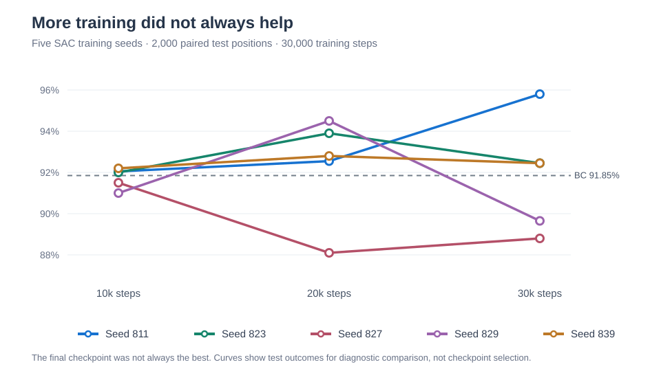
The contrast is especially clear for Seed 829: its 20k checkpoint succeeded in 94.50% of trials (59 rescues / 6 regressions), but its 30k checkpoint fell to 89.65% (45 rescues / 89 regressions). Seed 811, by contrast, improved to 95.80% at 30k (83 rescues / 4 regressions).
| SAC seed | Selected step | Final success | Rescue / Regression |
|---|---|---|---|
| 811 | 30k | 95.80% | 83 / 4 |
| 823 | 20k | 93.90% | 49 / 8 |
| 827 | 10k | 91.50% | 3 / 10 |
| 829 | 20k | 94.50% | 59 / 6 |
| 839 | 20k | 92.80% | 36 / 17 |
Does more validation help? Selecting checkpoints with 40 versus 500 validation episodes agreed for four of five models. The mean final success rates were 93.63% versus 93.70%, respectively; this small difference was not statistically established. Across the five runs, success rates spanned 7.00 percentage points at 30k, compared with 1.20 points at 10k.
Finding 6: Residual SAC can substantially rescue failed BC grasps, but continued training can also introduce many regressions. Training-seed variability and checkpoint quality must be addressed before an adaptive gate can be expected to generalize.
Five SAC training seeds and one shared 2,000-position test set limit generalization. All checkpoint choices were frozen before final evaluation. Candidate causes, including exploration, critic approximation, replay-buffer composition, and entropy dynamics, remain hypotheses, not experimentally identified mechanisms.
08 / Controlling SAC Regressions
Can smaller RL corrections prevent failed grasps?
After finding unstable SAC training, I tested a controlled change to the learning reward. Arm A kept the original residual-action penalty coefficient (0.005); Arm B used a stronger penalty (0.020). Everything else, including frozen BC, SAC training settings, and the ±5 mm per-axis correction limit, was held fixed. I trained five new SAC seeds (907, 911, 919, 929, 937) per arm and evaluated both arms on the same 2,000 new cube positions per model. The shared BC baseline was 92.10%.
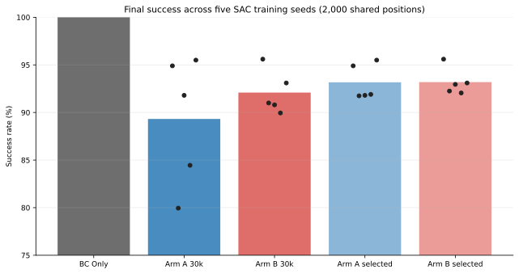
| SAC seed | Arm A success | Arm B success | A rescue / regression | B rescue / regression |
|---|---|---|---|---|
| 907 | 94.90% | 95.60% | 60 / 4 | 71 / 1 |
| 911 | 79.95% | 91.00% | 15 / 258 | 52 / 74 |
| 919 | 91.80% | 90.80% | 54 / 60 | 23 / 49 |
| 929 | 84.45% | 89.95% | 4 / 157 | 19 / 62 |
| 937 | 95.50% | 93.10% | 68 / 0 | 36 / 16 |
| Five-seed mean | 89.32% | 92.09% | 40.2 / 95.8 | 40.2 / 40.4 |
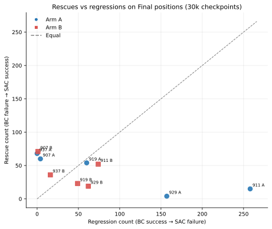
At the fixed 30k checkpoint, stronger regularization increased mean success from 89.32% to 92.09% (+2.77 percentage points) and reduced mean regressions from 95.8 to 40.4 per 2,000 trials. Mean rescues remained 40.2, but individual seeds behaved differently: Seed 911 improved markedly, while Seed 937 dropped from 95.50% to 93.10%. Mean residual action norm also fell from 4.06 to 3.12 mm, and action saturation from 7.13% to 4.48%.
Does stronger regularization still help after checkpoint selection?
I separately selected each model's checkpoint using 500 validation positions, then evaluated the frozen choices on the same untouched 2,000-position final set. The mean success-rate difference nearly vanished:
| Method | Mean success | Mean rescues | Mean regressions |
|---|---|---|---|
| Arm A · selected | 93.17% | 41.6 | 20.2 |
| Arm B · selected | 93.19% | 28.2 | 6.4 |
Arm B still had fewer regressions, but it also rescued fewer BC failures. Region-level analysis revealed another trade-off: across the five fixed-30k models, stronger regularization reduced regressions in WS (326 → 62) but increased them in ES (1 → 95). These totals reuse the same test positions across models and are descriptive, not independent samples.
Finding 7: Stronger residual-action regularization can suppress harmful corrections, but it is not uniformly beneficial. Its mean 30k advantage over the original penalty was large, whereas its advantage after validation-based checkpoint selection was only +0.02 percentage points. I therefore followed this exploratory experiment with an independent ten-seed replication, evaluating both rescue retention and regression prevention (Section 09).
Controlled MuJoCo study, five paired SAC training seeds, 500 validation positions (230000–230499), and 2,000 separate final positions (240000–241999). Exact paired McNemar tests with Holm adjustment found seed-dependent differences, not a universal improvement. Lower residual magnitude is an observed association, not proof of the mechanism; no real-robot or camera-based evaluation was performed.
09 / Independent-Seed Replication
Does the regularization benefit reproduce on new models?
To challenge the promising five-seed result rather than optimize around it, I preregistered the coefficients, hypotheses, evaluation protocol, and analysis before training ten new paired SAC seeds (20 models, 60 checkpoints). I kept both training conditions unchanged: Arm A = 0.005 and Arm B = 0.020. I selected checkpoints using 500 shared validation positions (250000–250499), froze the choices and hashes, then tested on 2,000 separate matched positions (260000–261999). This final set has a different fixed BC baseline (92.65%) from the preceding study.
Research process: from hypothesis to the next question
- 1 · HypothesisSmaller residual corrections might preserve BC successes without losing useful SAC rescues.
- 2 · Controlled comparisonChanging only the action penalty (0.005 vs 0.020) reduced mean 30k regressions in an initial five-seed experiment, but the benefit varied by policy.
- 3 · Independent replicationTen new paired training seeds reproduced a directional 30k trend, not a statistically established cross-seed improvement. Checkpoint selection further narrowed the difference.
- 4 · Next research questionCan a stronger contemporary imitation policy and an explicit, calibrated abstention mechanism achieve reliable rescues without harmful interventions?
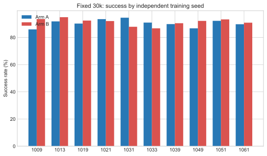
| Evaluation | Arm A success | Arm B success | Mean A / B rescues | Mean A / B regressions | Seeds with fewer B regressions |
|---|---|---|---|---|---|
| Fixed 30k | 90.52% | 91.41% | 31.2 / 26.9 | 73.9 / 51.7 | 7 / 10 |
| Validation-selected | 93.13% | ≈ 93.3% | 26.4 / 26.7 | 16.7 / 13.8 | 6 / 10 |
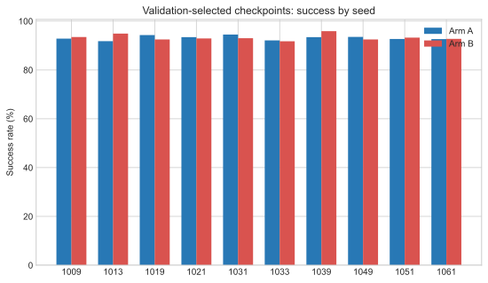
Statistical interpretation: At 30k, the mean B−A success difference was +0.89 percentage points (paired-seed bootstrap 95% CI −1.69 to +3.28). For validation-selected models, it was +0.16 points (95% CI −0.72 to +1.13). Both intervals cross zero, and seed-level exact sign tests were not significant. The prespecified exploratory threshold was met at fixed 30k, but not after checkpoint selection. Individual position-level McNemar results do not establish improvement over a population of future SAC training seeds.
Regional replication: did the ES / WS pattern persist?
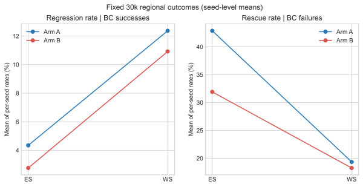
Unlike the earlier five-seed study, the ten-seed replication found lower average conditional regression rates under Arm B in both ES and WS at fixed 30k, alongside lower rescue rates. After checkpoint selection, Arm B had fewer regressions in ES but slightly more in WS. The originally observed regional direction was therefore not robustly reproduced. These rates condition on BC success or failure and should not be interpreted as independent pooled trials across models.
Finding 8: The replication narrows the claim: stronger residual regularization can reduce some failures, but does not establish a reliable improvement across newly trained SAC models. Checkpoint selection matters at least as much to mean success in this setting. Both arms used a nonzero residual in 100% of evaluated episodes, so this experiment did not demonstrate fewer SAC calls. This motivated a matched follow-up comparing one-step and action-chunked BC, with and without stepwise residual SAC (Section 10).
The five-seed exploratory comparison and ten-seed preregistered replication use different final position sets; their BC rates are not directly interchangeable. These results concern a low-dimensional, known-position, single-object simulated grasping task, not general visuomotor or real-world manipulation.
Replication report · Preregistered protocol · Replication data & figures
10 / Action-Chunked BC & Residual SAC
Can four-step action plans outperform single-step imitation?
To investigate the base policy rather than tune SAC again, I trained H1 (one-step MLP BC) and H4 (four-step action-chunked MLP BC) with three matched training seeds (42, 123, 456). Both used the same source episodes, valid starting observations, dynamics, and test positions. I audited 300 temporally intact expert episodes: the earlier randomly subsampled dataset had temporal gaps and could not safely supply consecutive chunk targets. H4 predicts four actions and executes them before replanning.
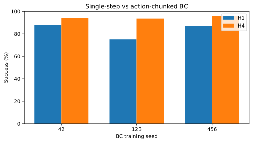
| BC seed | H1 success | H4 success | H4 − H1 |
|---|---|---|---|
| 42 | 88.00% | 93.95% | +5.95 pp |
| 123 | 75.00% | 93.45% | +18.45 pp |
| 456 | 87.25% | 95.70% | +8.45 pp |
| Three-seed mean | 83.42% | 94.37% | +10.95 pp |
Mean BC inference calls fell from 127.2 to 30.8 per episode (approximately 76%), while total BC-only episode time changed from 0.374 to 0.352 s (about 6% faster), not 76% faster. H4 also has more future-action supervision and a slightly larger output head (20,240 versus 18,692 parameters), so the result cannot yet be attributed to open-loop chunk execution alone.
Does closed-loop residual SAC reliably improve the stronger H4 policy?
I froze all six BC checkpoints and trained 18 SAC controllers (three SAC training seeds for each BC architecture and BC seed). SAC corrected XYZ at every control step, including inside H4's cached chunks; the gripper remained BC-controlled. Models were selected on 500 separate validation positions before evaluating on the same untouched 2,000-position Final set.
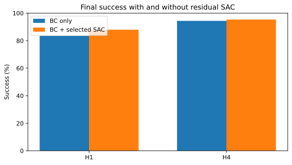
| Method | BC only | BC + SAC | SAC gain | Mean Rescue / Regression |
|---|---|---|---|---|
| H1 · single step | 83.42% | 87.95% | +4.53 pp | 120.1 / 29.4 |
| H4 · four-step chunk | 94.37% | 95.33% | +0.96 pp | 25.3 / 6.1 |
The stronger H4 BC has fewer failures left for SAC to rescue. The mean difference-in-gains (H4 minus H1) was −3.57 percentage points, with crossed-seed hierarchical bootstrap 95% interval [−11.22, +0.83] pp. This does not establish that residual SAC adds more benefit to chunked BC. SAC remained active on 100% of control steps, so the reduction in BC replanning calls is not a reduction in SAC calls.
Inspect computational cost and the differential SAC benefit across seeds
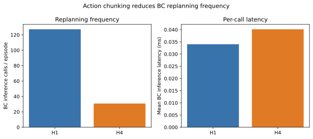
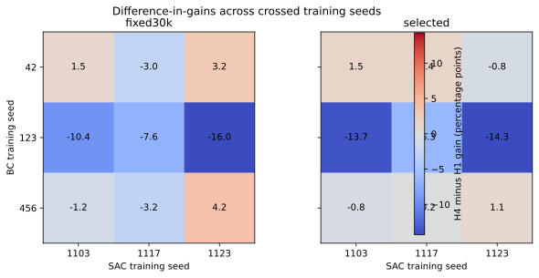
Finding 9: A simple state-conditioned four-step BC produced a large, repeatable improvement over single-step BC in this specific grasping task. Stepwise residual RL improved many selected policies, but did not provide a consistent advantage for H4. The next experiment isolates runtime replanning by using the same frozen H4 policies (Section 11).
Limitations: three independent BC seeds crossed with three SAC seeds, not 18 independent BC models; one state-based MuJoCo cube-grasping task; no camera perception, occlusion, hardware, ACT, or Diffusion Policy. H4 and H1 differ in action supervision and output-head capacity. Position-level paired tests do not establish generalization to other training seeds.
Action-chunking experiment report · Machine-readable summary · Experimental data & figures
11 / Replanning Frequency Ablation
Does longer action-chunk execution help the same frozen policy?
The earlier H1/H4 comparison changed both the learned action targets and runtime execution. To isolate replanning frequency, I reused three already-trained H4 MLP BC policies, without changing their parameters, output size, normalization, or demonstrations. At R1 the model predicts four actions but executes only the first before replanning; at R2 it executes two; at R4 it executes all four. All robot dynamics, gripper commands, and Final initial positions were held fixed. No RL or new training was involved.
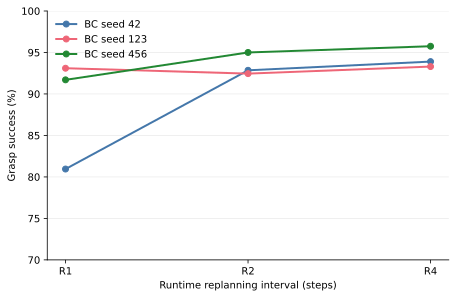
| BC training seed | R1 | R2 | R4 | R4 − R1 |
|---|---|---|---|---|
| 42 | 80.95% | 92.85% | 93.90% | +12.95 pp |
| 123 | 93.10% | 92.45% | 93.30% | +0.20 pp |
| 456 | 91.70% | 95.00% | 95.75% | +4.05 pp |
| Three-model mean | 88.58% | 93.43% | 94.32% | +5.73 pp |
R4 outperformed R1 in all three policies, but effect sizes differed strongly. Seed 42 benefited by +12.95 percentage points, Seed 456 by +4.05, and Seed 123 by just +0.20. Exact paired McNemar tests with Holm adjustment were significant for Seeds 42 and 456, but not 123. These tests measure differences across shared start positions conditional on each frozen model; they cannot establish cross-training-seed superiority.
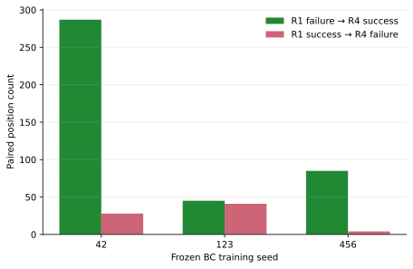
For R4 versus R1, the number of newly successful versus newly failed grasps was 287 / 28 (Seed 42), 45 / 41 (Seed 123), and 85 / 4 (Seed 456). R4 also exceeded R2 by +1.05, +0.85, and +0.75 points, respectively. R4's advantage is consistent with temporally sustained plans helping in this controlled task, but is not proof that open-loop execution will be robust to unexpected disturbances.
Efficiency and execution time
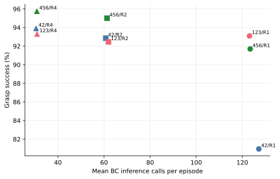
Mean BC calls fell from 124.57 to 30.77 per episode (−75.3%), and measured cumulative inference time from 4.611 to 1.713 ms (−62.9%). Total episode wall time changed from 0.3659 to 0.3588 s (approximately −1.9%); sequential timings on a Mac are descriptive, not real-robot throughput results.
Regional effects, runtime, and data-integrity notes
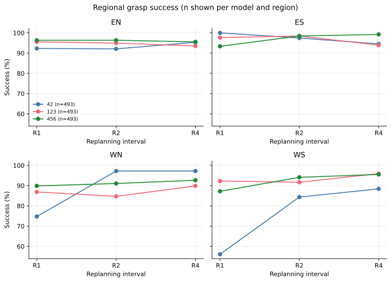
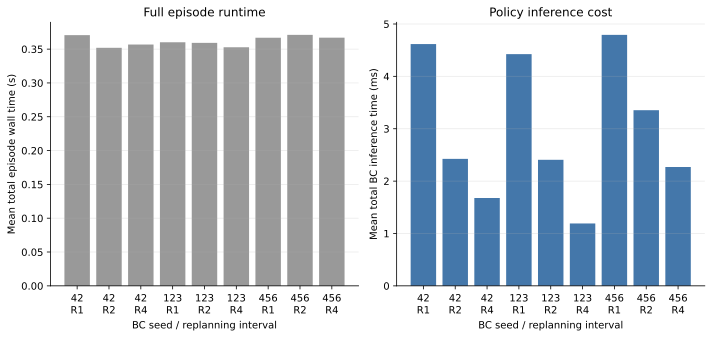
Software checks reproduced 60 earlier H4 episodes and a saved 121-step trajectory. A duplicate partial CSV for Seed 456/R1 was preserved and excluded, then fully rerun with unchanged conditions following explicit authorization; two previously viewed outcomes and this deviation were disclosed. All 18,000 accepted episodes passed seed, position, and checkpoint-hash integrity checks. A later correction to latency-unit scaling did not affect success rates or significance tests.
Finding 10: With identical trained H4 weights, executing longer cached action sequences contributed to higher success in this simulated task. But large seed- and region-level differences mean that reliability under changing observations or dynamics remains unresolved. The next experiment should probe controlled uncertainty or task disturbances rather than assume that longer open-loop execution is universally best.
Limits: only three BC training seeds and one known-state, single-cube MuJoCo task; no camera observation, real disturbance, new SAC training, ACT, or Diffusion Policy. This study isolates runtime replanning within H4, not the full architectural/supervision difference between H1 and H4.
12 / Uncertainty-Aware Adaptive Replanning
Can observed uncertainty guide how often a robot replans?
The previous frozen-H4 study established that four-step execution can outperform one-step replanning without model retraining, but it did not establish robustness to uncertain observations. I therefore tested fixed R1, fixed R4, and a simple Adaptive controller under synthetic Gaussian noise added to observed cube XY and matching relative XY, while leaving the robot's physical state unchanged. The same three frozen H4 MLP policies were used throughout; no BC or SAC training was performed.
The decision procedure
- 1 · Controlled noiseAdd independent zero-mean Gaussian observation errors at σ = 0, 5, or 10 mm. Reuse the same noise schedule and initial positions across controllers.
- 2 · Common warm-upExecute R4 for 20 steps, recording the noisy cube XY. Audit that the physical cube remains effectively stationary during this window.
- 3 · Frozen thresholdEstimate σ from the two sample variances. After the warm-up, choose R4 if σ̂ ≤ 7.5 mm, otherwise R1, for the rest of the episode. The threshold was selected on disjoint calibration data.
- 4 · Independent Final evaluationCompare three controllers × three BC seeds × three noise levels × 1,000 shared positions: 27,000 trials. Do not retune the threshold on Final results.
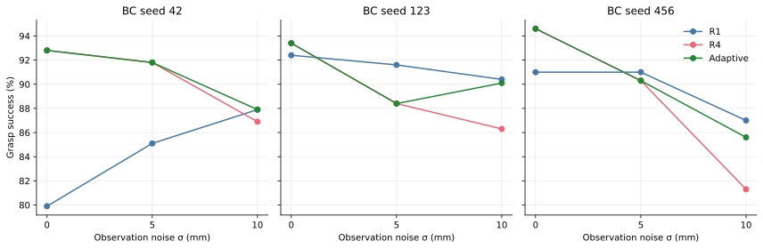
| Observation noise σ | Fixed R1 | Fixed R4 | Adaptive |
|---|---|---|---|
| 0 mm | 87.77% | 93.60% | 93.60% |
| 5 mm | 89.23% | 90.17% | 90.17% |
| 10 mm | 88.43% | 84.83% | 87.87% |
| Equal-weight mean | 88.48% | 89.53% | 90.54% |
Adaptive improved on the calibration-selected fixed R4 baseline by +1.01 percentage points, with a paired position-bootstrap 95% interval of +0.54 to +1.50 points, and exceeded fixed R1 by +2.07 points overall. These intervals concern common evaluation positions for three fixed trained models, not independent new policy-training seeds. Results across models and noise levels were heterogeneous; for BC seed 123 at 5 mm, fixed R1 was 3.2 points better than Adaptive.
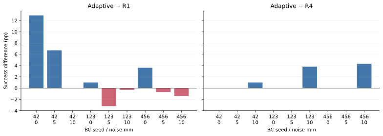
Why estimated noise alone was not enough
The controller never received the injected true σ: it estimated uncertainty using only the first 20 noisy position observations. Estimated median σ was about 0 / 4.98 / 9.95 mm. Adaptive chose R4 in every 0/5 mm trial and chose R1 in 98.6% of 10 mm trials. Still, a correctly estimated noise level does not reveal which execution interval will succeed on each individual episode.
Additional analysis: noise estimation, harmful transitions, and inference cost
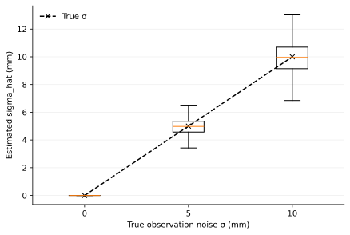
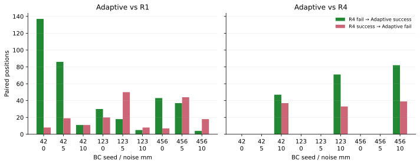
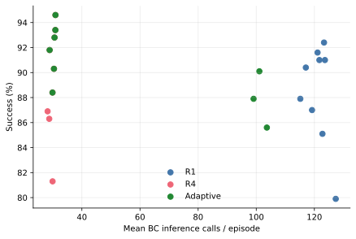
What this experiment did not establish: Adaptive was not a continuously updating controller: it made one decision after a fixed 20-step R4 warm-up. At 10 mm, it improved on R4 but still underperformed full-episode R1, potentially because of the warm-up and occasional incorrect branch selection. The experiment did not isolate those two factors. It also does not test visual occlusion or temporally correlated perception error.
Finding 11: A simple, pre-calibrated uncertainty estimate can guide a training-free execution choice and retain clean-condition performance in a controlled synthetic benchmark. However, uncertainty estimation is not equivalent to reliable control selection. This motivated the independently validated Kalman estimator and online switching study in Section 13.
All 27 cells (27,000 episodes) passed integrity audits; the 7.5 mm threshold was frozen before Final evaluation, all three BC checkpoint hashes remained unchanged, and 33 tests passed. Only three trained BC seeds were evaluated; the bootstrap interval conditions on these models. Noise is applied to direct state observations, not physical dynamics or camera perception. No SAC was used.
Adaptive replanning research report · Final analysis · Final integrity audit · Data & figures
13 / Kalman Online Replanning Under Changing Noise
Can a robot revise its replanning interval when perception quality changes?
The previous adaptive controller committed to one interval after an initial estimate. To test whether updating that decision during execution helps, I reused the same three frozen H4 BC policies and an independently validated Kalman observation-noise estimator (16/16 diagnostic gates passed). Synthetic Gaussian noise in the observed cube position changed from 0 to 10 mm or 10 to 0 mm at observation step 40; robot physics and trained policy weights were unchanged.
Both Kalman controllers began with R4 and used the same frozen estimator. OneShot selected R1 or R4 at step 20 with a 7.5 mm threshold; Online additionally used 6.5 / 8.5 mm hysteresis for later switches. Neither received the true noise level, change time, or grasp outcome. The preregistered evaluation used three frozen models × two noise-change profiles × four controllers × 1,000 paired positions = 24,000 episodes, all passing the Final integrity audit.
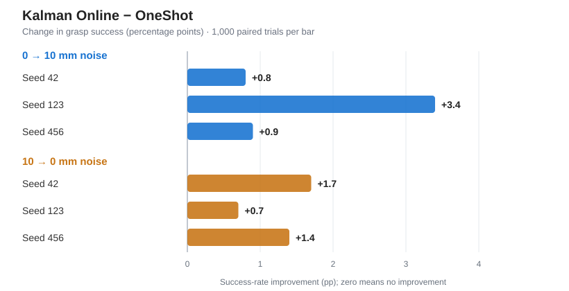
| Observation noise | Fixed R1 | Fixed R4 | Kalman OneShot | Kalman Online | Online − OneShot |
|---|---|---|---|---|---|
| 0 → 10 mm | 87.40% | 87.63% | 87.63% | 89.33% | +1.70 pp |
| 10 → 0 mm | 93.23% | 93.73% | 93.53% | 94.80% | +1.27 pp |
| Equal-weight mean | 90.32% | 90.68% | 90.58% | 92.07% | +1.48 pp |
The prespecified primary effect, Online − OneShot, was +1.48 percentage points (95% paired-position bootstrap CI +0.92 to +2.08 pp). Across 6,000 paired episodes per adaptive controller, Online rescued 178 OneShot failures but introduced 89 regressions, a net gain of 89 successful grasps. Mean gains by frozen BC seed were +1.25 (42), +2.05 (123), and +1.15 pp (456). Three of six per-condition comparisons passed Holm-adjusted paired McNemar tests; the other three did not.
Adaptation and cost: The median observed post-change switch delay was 16 steps for 0 → 10 mm and 12 steps for 10 → 0 mm. Mean BC inference calls were 63.72 for Online versus 67.14 for OneShot, although mean episode wall time was slightly higher (0.464 vs 0.446 s). These timing measurements are descriptive and are not real-robot speed claims.
Finding 12: Under two controlled changes in independent Gaussian observation noise, periodic Kalman-based replanning improved grasp success over an otherwise matched one-shot decision without retraining. The paired-position confidence interval excludes zero, but the result is conditional on three frozen policies and does not show that Online dominates every fixed controller or generalizes to camera occlusion, correlated errors, or real robots.
Frozen preregistration · Experiment and audit code · Kalman estimator
14 / Discussion & Key Takeaway
What the full research sequence revealed
Imitation learning: Broader demonstrations produced a large BC generalization improvement, while one DAgger round did not outperform added expert trajectories. In a later matched study, four-action MLP BC outperformed one-step BC (94.37% versus 83.42%), although future-action supervision and output-head capacity also differed.
Residual RL and reproducibility: SAC sometimes rescued failed BC grasps and sometimes destroyed successful ones. Fixed spatial gates did not generalize reliably; policy-specific gates often abstained. A five-seed regularization experiment motivated a preregistered ten-seed replication, which did not establish a reliable between-penalty advantage. Chunk-aware SAC improved many validation-selected checkpoints but did not reliably add more benefit to H4 than H1.
Execution timing and observation uncertainty: Without retraining, executing the full four-action prediction rather than replanning every step improved mean success by 5.73 points across three frozen H4 policies. Under stationary synthetic observation noise, a one-time uncertainty-based switch improved success over a calibration-selected fixed R4 baseline (+1.01 pp). A subsequent preregistered study under changing noise found +1.48 pp for Kalman Online versus Kalman OneShot (95% paired bootstrap CI +0.92 to +2.08 pp), with positive mean effects for all three frozen policies. Estimating uncertainty and selecting safe, effective feedback remain different problems.
Relation to contemporary research: These state-based MLP studies are not implementations of Diffusion Policy or ACT. More directly related recent work includes ResiP and ResFiT on residual refinement, and PACE (NeurIPS 2026) and RAIN (2026 preprint) on adaptive action execution or refinement. Adaptive execution is not claimed as a novel concept here; my contribution so far is a controlled, reproducible study of specific failure modes and decision trade-offs.
Next research question: Does the benefit of online replanning survive temporally correlated observation errors or intermittent missing measurements? These two challenges should be tested separately, using frozen controllers, preregistered protocols, and new paired evaluation positions before moving to camera-based perception or real hardware.
Limitations: one simulated state-observation cube grasping task, only three frozen BC training seeds in the latest studies, synthetic independent Gaussian position noise rather than images, correlated perception error, or occlusion, and no real robot. All confidence intervals must be interpreted at their stated level: paired positions are not new training-seed replications. Hardware differences prevent strong aggregate wall-clock timing claims.
Latest Kalman online protocol · Online experiment code · Earlier adaptive replanning report · Replanning ablation · Action-chunked BC and SAC · Independent-seed replication